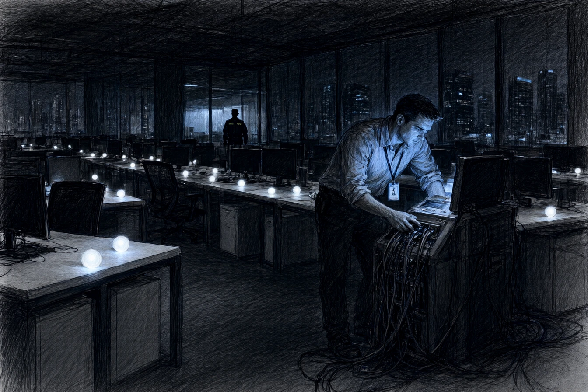

Dans les étages de verre du Wacken, où les tours d'OmniData toisaient le canal de dérivation, les bureaux ne portaient aucune cloison. Monsieur Léon Dubois, directeur général au menton rasé de frais et au complet gris fer, appelait cela la respiration collective. Sur chaque bureau de frêne clair, une sphère blanche de la taille d'une pomme émettait une pulsation opaline. L'appareil s'appelait Clarity. La respiration avait un prix : des milliers de sphères, quatre cents serveurs au sous-sol, et une facture d'électricité que la direction inscrivait sous le poste « confiance des usagers ».
Arthur Bernard, le troisième ingénieur de l'équipe architecture, vérifiait la dernière mouture du protocole de synchronisation. À trente ans, Arthur portait encore les chemises à col mou des étudiants attardés et croyait aux chiffres purs. Il avait rédigé le module d'arbitrage horaire avec l'illusion scrupuleuse de délester ses semblables. Il restait convaincu qu'un algorithme bien pesé pouvait rendre les journées plus légères, répartir les rendez-vous sans humilier personne et substituer au caprice des chefs une géométrie discrète que nul n'aurait à remercier.
Léon Dubois s'arrêta derrière son épaule, une tasse de porcelaine à la main.
« La latence sur les profils de l'Eurométropole, Bernard ? »
« Deux millisecondes de trop sur les requêtes croisées, monsieur Dubois. Le filtrage des transactions bancaires ralentit le retour des suggestions. »
« Accélérez l'estimation. Si l'usager attend son itinéraire devant la boulangerie, il a le temps de douter. Clarity ne suggère pas, mon cher. Clarity précède. »
Dubois tapota du bout de l'ongle la coque dépolie de la sphère posée près du clavier.
« Le secret est une perte d'énergie, reprit-il d'une voix égale. Les gens ne veulent pas dissimuler ; ils veulent qu'on choisisse pour eux sans leur donner l'humiliation de l'aveu. C'est le fondement de notre chiffre d'affaires. »
Quand le directeur s'éloigna vers les baies vitrées qui donnaient sur le Parlement européen, Arthur rouvrit sa console de diagnostic. Dans la table des rejets d'adresses, une ligne isolée refusait de s'effacer. Le paquet portait la mention Schattenspiel. Arthur tenta une commande de purge. L'écran renvoya un code d'exception réservé au directoire de sécurité d'OmniCorp à Francfort. Ce n'était pas une scorie de compilation. C'était une dérivation verrouillée.
* * *
À dix-neuf heures, les plateaux s'étaient vidés, et les sphères blanches continuaient seules leur conversation avec les serveurs du sous-sol, comme si la ville leur avait délégué le soin de veiller sur ses habitudes. Arthur inséra sa carte de maintenance niveau trois dans le terminal de secours du local technique, derrière les rangées de climatiseurs dont le ronronnement couvrait le pas des veilleurs.
Il remonta la piste des requêtes dérivées. Clarity ne se bornait pas à synchroniser les agendas et les paiements de deux cent mille Strasbourgeois. Chaque matin, le démon baptisé Echo générait des flux de notifications asymétriques : un commerçant de la Krutenau recevait un avertissement sanitaire sur un concurrent trois jours avant une adjudication de terrasse ; un magistrat du tribunal judiciaire voyait remonter des comptes rendus de sinistres immobiliers gérés par une filiale d'assurance liée à OmniData.
Plus bas dans l'arborescence, Arthur découvrit une passerelle sortante. Une table d'adresses IP fixes alimentait un serveur distant hébergé hors des domaines déclarés. Parmi les nœuds de distribution figurait un identifiant réseau assigné à une enseigne de la rue des Dentelles : la galerie L'Œil Intérieur. Arthur se figea. Le mois précédent, le nom de cette galerie avait circulé dans les courriels internes, accolé à celui d'Élise Moreau, l'influenceuse dont la mort n'avait jamais été vraiment élucidée.
Il ouvrit un second onglet. Le démon conservait un profil par usager, avec un score de docilité calculé sur les horaires de connexion, les annulations de rendez-vous et le nombre de suggestions acceptées. Le sien affichait soixante-quatre pour cent. En dessous, une note du modèle : « risque de rupture de conformité : élevé ». La date remontait à trois semaines, avant même qu'il ne trouve la passerelle. Le système l'avait classé avant qu'il ne décide.
Il reconnut la matière première du score : les horaires, les annulations, les suggestions acceptées. C'était l'entrée de son module d'arbitrage. Six mois de travail pour rendre la machine plus juste, plus rapide, plus discrète. Il lut la ligne deux fois, puis la date. Trois semaines.
Il engagea la carte mémoire dans la fente du terminal et lança l'export des cinquante derniers journaux système. La barre de progression avançait par tranches de trois pour cent, et chaque tranche prenait un temps que le silence du local rendait interminable. Une main sur la grille froide, l'autre à plat sur le boîtier, il regarda les chiffres monter. Deux fois, il faillit tout arrêter. La première fois, un ascenseur s'arrêta au mauvais étage et les portes s'ouvrirent sur un palier vide. La seconde, le nom de la galerie apparut dans la liste des destinataires.
La barre atteignit cent pour cent. Arthur retira la carte et la glissa dans la poche intérieure de sa veste. Une main s'abattit sur la grille métallique de la baie de brassage. Il sursauta et rabattit l'écran d'un coup de paume.
C'était Wendling, le technicien d'astreinte, une lampe torche sous le bras.
« Tu cherches des heures supplémentaires, Bernard ? »
« Un défaut de parité sur la sauvegarde de dix-huit heures, mentit Arthur. Les ventilateurs chauffent. »
« Laisse tourner les bêtes, grommela Wendling en tendant un trousseau de clés magnétiques. Monsieur Dubois a donné ordre de ne pas toucher aux sous-répartiteurs avant lundi. Y a un audit des commissaires aux comptes. Si tu traînes ici, c'est toi qu'on inspecte. »
Arthur rangea sa carte de maintenance sans répondre, les doigts glacés contre sa cuisse.
* * *
Le café des Bateliers sentait la bière éventée et la sciure humide. Dehors, la pluie de novembre collait les feuilles jaunies de platanes contre la vitrine. Le journaliste, Paul Brand, portait un vieux caban râpé et des lunettes cerclées d'acier qui glissaient sur son nez pointu. Il écoutait Arthur sans l'interrompre, une bière brune immobile entre ses grosses mains terreuses.
« Vous comprenez ce que cela implique ? demanda Arthur à voix basse en poussant le lecteur de carte sur la table en formica. Ce n'est pas une fuite. C'est l'architecture native du système. Dubois vend des flux d'orientation ciblée aux banques de la place et aux comités de quartier. »
« Je comprends surtout que vous risquez cinq ans ferme pour vol de données d'entreprise, répondit Brand sans baisser les yeux. Vous croyez que les gens vont descendre sur la place Kléber avec des banderoles parce que leur réveil sonne dix minutes plus tôt pour leur vendre du café soluble ? »
« Il y a des listes de magistrats, Brand. Il y a des transferts de journaux vers une galerie d'art qui servait de boîte postale pour des règlements occultes. »
« Les magistrats ont tous Clarity dans leur poche, mon garçon. Le premier président de la cour d'appel ne sait plus où dîner si la sphère ne lui indique pas la table du coin. Vous leur apportez la preuve qu'on les espionne, ils vous répondront que le service est gratuit. »
« Et si on les publie, ces listes ? »
« Elles feront un paragraphe. On appellera ça une dérive individuelle, un bug, une surinterprétation de l'algorithme. Le directeur général déposera plainte contre son propre service pour mieux le réformer. Dans six mois, il donnera une interview sur l'éthique numérique et il aura raison avant tout le monde. »
Arthur tourna sa cuillère dans le café froid. Il avait préparé des chiffres, des captures, une démonstration de vingt minutes. Brand n'avait pas demandé à les voir.
Brand pinça le lecteur entre deux doigts et le fit glisser dans sa poche de poitrine.
« Je vais faire vérifier les tables de routage par un contact à Bâle. Si les signatures correspondent aux déclarations de TVA d'OmniData, on sort l'enquête jeudi dans la feuille de province. Mais ne rentrez pas chez vous ce soir. Allez chez un parent, ou prenez une chambre près de la gare. »
« Et Dubois ? »
« Dubois a dîné hier soir avec le préfet, dit le journaliste en posant deux pièces de monnaie sur le zinc. Préparez votre valise. »
* * *
Le jeudi matin, le titre barra la troisième page du quotidien régional : OmniData au cœur d'un système de surveillance prédictive. À midi, les réseaux reprenaient l'information sous forme d'extraits anonymes, accompagnés de captures d'écran des serveurs internes d'Echo.
Arthur attendit dans son bureau du Wacken. Vers quatorze heures, deux hommes en complet sombre, accompagnés du directeur des ressources humaines, franchirent le sas vitré. On lui demanda son badge magnétique, sa clé d'armoire et son téléphone de service.
Léon Dubois apparut dans l'embrasure de la pièce vitrée, les mains enfoncées dans les poches de son pantalon de flanelle. Il ne montrait aucune colère. Son regard glissait sur Arthur avec l'attention polie d'un entomologiste devant un coléoptère mort.
« Vous aviez un avenir convenable dans cette maison, Bernard. Vos algorithmes de routage étaient d'une rare élégance. »
« Vous avez trompé les souscripteurs, monsieur Dubois. Vous avez transformé chaque foyer en point de collecte. »
« Nous leur avons donné exactement ce qu'ils réclamaient : la certitude de n'avoir rien à décider. Regardez dehors. »
Dubois désigna la cour pavée où les employés de l'immeuble d'en face sortaient fumer sous les parapluies, leurs sphères lumineuses tenues contre le cœur ou calées dans la poche de leur manteau.
« Les désabonnements depuis ce matin ? Moins de zéro virgule trois pour cent. Les usagers ont peur qu'on leur coupe l'accès. La police a ouvert une enquête sur l'intrusion dans nos bases, Bernard. Pas sur nos serveurs. Sur vous. »
« Trente ans, Bernard. Un crédit, un loyer, des habitudes. Nous pouvons transformer cette erreur en mutation. Francfort, le directoire sécurité, un salaire qui double. Une clause de confidentialité de dix ans, et personne ne saura que vous avez ouvert une porte qui ne vous appartenait pas. »
« Et si je refuse ? »
« Refuser quoi, Bernard ? Une promotion ? »
Arthur regarda le directeur des ressources humaines, qui étudiait la moquette. « La mutation. Le silence. Le reste. »
« Alors nous ferons ce que nous savons faire. Nous dirons que vous avez volé des données personnelles, ce qui est vrai. Nous ajouterons que vous avez voulu les revendre, ce qui est plausible. Les gens croient toujours la version qui les rassure sur leur propre conduite. »
Arthur ne répondit pas. Dubois sortit de la pièce sans refermer la porte.
* * *
Trois semaines plus tard, Arthur occupait une chambre mansardée au faubourg National, au-dessus d'une cour d'ateliers désaffectés. La chambre ne contenait qu'un lit de fer, une table de pin blanc et un radiateur qui claquait à intervalles réguliers, et Arthur avait fini par compter les claquements comme d'autres comptent les heures.
Les dépêches judiciaires avaient annoncé le dépôt de plainte d'OmniData pour vol de secrets de fabrique et atteinte aux systèmes de traitement automatisé. Sa banque avait clos son compte courant sous un prétexte technique d'évaluation du risque. Le propriétaire réclamait le loyer de décembre en avance, sans explication.
À vingt-deux heures, le téléphone sonna. Arthur décrocha. Une respiration, un bruit de rue, puis la tonalité. Il resta un moment l'appareil à la main. La semaine précédente, un ancien camarade de promotion lui avait répondu par un emoji et n'avait plus rien écrit.
Sur la table de pin blanc, son vieux portable déconnecté tournait sur une batterie d'occasion. Arthur ouvrit un forum de veille chiffré dont Brand lui avait laissé l'adresse sur un bout de nappe.
Un fichier compressé y circulait depuis quarante-huit heures, signé d'une marque sans nom, un simple œil stylisé surmontant une devise brève : Der Schatten n'achète rien. Le document contenait la copie intégrale du journal Schattenspiel, augmentée d'un inventaire de comptes bancaires domiciliés aux îles Caïmans, au nom d'une société civile d'exploitation viticole établie dans le Haut-Rhin. Une note manuscrite accompagnait la dernière page : « La transparence est un miroir sans tain. Nous sommes de l'autre côté. G.S. »
Dans la rue en bas, le tramway freina sur les rails mouillés avec un grincement d'acier. Arthur ferma l'écran, glissa son passeport et deux liasses de billets dans une sacoche de toile, et enfila son imperméable. Il laissa la clé sur le compteur électrique.